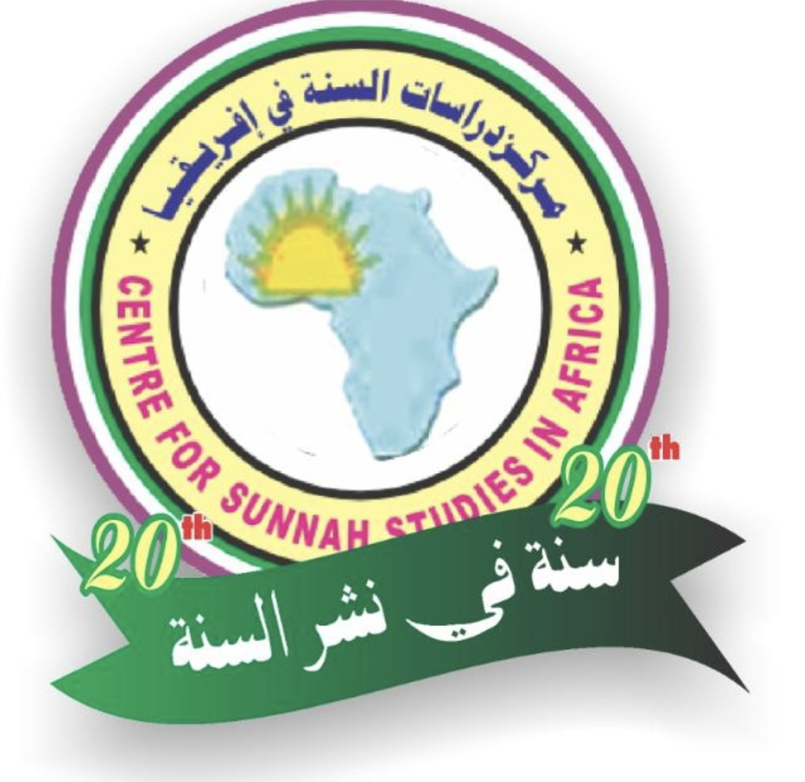
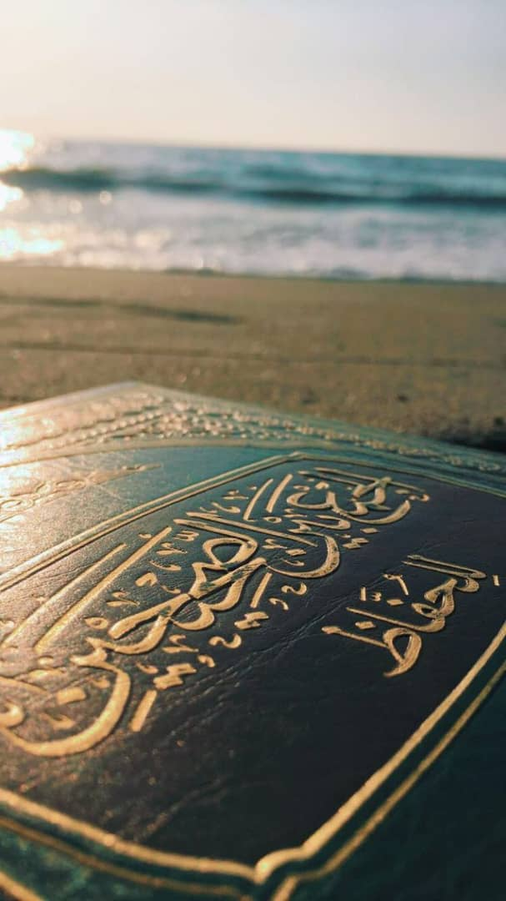
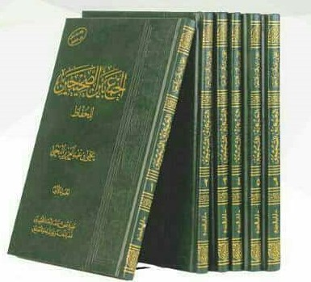
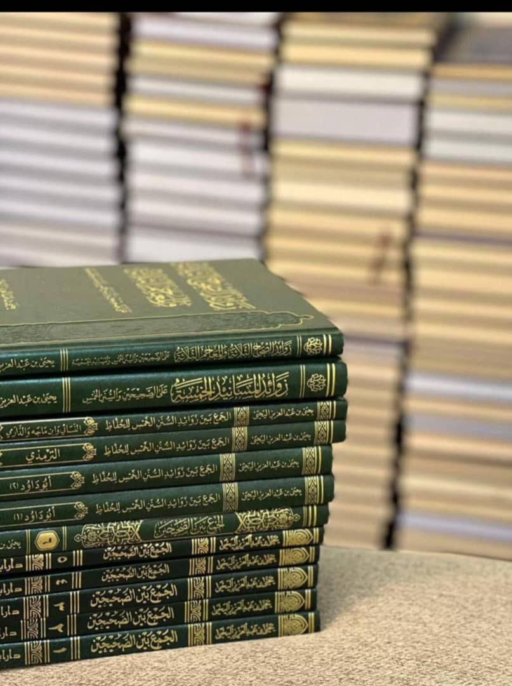

Sahihain
Six volumes of Ahadith reported jointly and individually by Imams al-Bukhari and Muslim.

Centre for SunnahStudies in Africaبِسْمِ اللَّهِ الرَّحْمَنِ الرَّحِيمِ EST. 2006
A home for the study, preservation and sharing of the Prophetic tradition across Africa — with scholarship, care and purpose.

مَرْكَزُ دِرَاسَاتِ السُّنَّةِ فِي أَفْرِيقِيَا
Rooted in the Prophetic legacy.
Serving communities across Africa.
01 / WHO WE ARE
The Centre for Sunnah Studies in Africa grew from the annual Hadith memorisation programme founded by Sheikh Yahya bin Abdulaziz Al-Yahya. It came to Nigeria through the efforts of Sheikh Shu'aibu Abubakar Idris and Sheikh Umar Ahmad Zain.
The programme is designed for those who have memorised the Holy Qur’an and have an appreciable level of proficiency in the Arabic language. Its curriculum facilitates the memorisation of an encyclopaedia of Hadith through eighteen compiled books, studied in four stages.
Participants attend a full-time camp for approximately forty days in each stage, with their basic requirements provided throughout. The curriculum follows the classical order of the books; a Hadith memorised in one stage is not repeated in the stages that follow.
Our story in Africa →02 / THE CURRICULUM
Eighteen books of Hadith compiled for memorisation in a carefully sequenced curriculum.

Six volumes of Ahadith reported jointly and individually by Imams al-Bukhari and Muslim.
Four volumes from the collections of Abu Dawud, al-Tirmidhi, al-Nasa’i, Ibn Majah and al-Darimi.
Additional Ahadith from the Musnads of Imam Ahmad, Ibn Abi Shaybah, Ishaq, al-Bazzar and Abi Ya‘la.
Additional Ahadith from Ibn Khuzaymah, Ibn Hibban, al-Hakim and al-Tabarani.
03 / OUR STORY
Currently conducted annually in several courses, the programme has welcomed participants from across the globe. Nigeria has the unique distinction of serving as the Centre for the African sub-region.
04 / PROGRAMME ARCHIVE
Programmes organised by the Centre through October 2021. The figures below record participant places for each programme.
| No. | Year | Town / State | Venue | Participants |
|---|---|---|---|---|
| 1 | 2005 | Bauchi | Tambari Housing Estate | 12 |
| 2 | 2006 | Jos | Al-Bayan Islamic Secondary School | 19 |
| 3 | 2008 | Jos | Al-Bayan Islamic Secondary School | 55 |
| 4 | 2009 | Maiduguri | Al-Muneer International School | 39 |
| 5 | 2009 | Gusau | Ibn Usaimin Islamic | 121 |
| 6 | 2010 | Maiduguri | Al-Muneer International School | 119 |
| 7 | 2010 | Ibadan | Imam Malik College | 29 |
| 8 | 2011 | Bauchi | Games Village | 148 |
| 9 | 2011 | Ibadan | Imam Malik College | 45 |
| 10 | 2012 | Sokoto | Sahaba Centre | 103 |
| 11 | 2012 | Niamey | Markaz Al-Wafa' | 70 |
| 12 | 2012 | Ibadan | Imam Malik College | 32 |
| 13 | 2013 | Katsina | Hajj Camp | 157 |
| 14 | 2013 | Niamey | Markaz Al-Wafa' | 71 |
| 15 | 2014 | Niamey | Markaz Al-Wafa' | 69 |
| 16 | 2015 | Niamey | Markaz Al-Wafa' | 79 |
| 17 | 2016 | Bauchi | Dolphin Maria College | 126 |
| 18 | 2016 | Niamey | As-Salam International | 100 |
| 19 | 2017 | Niamey | Ad-Daar University | 100 |
| 20 | 2017 | Bauchi | Abubakar Siddiq Masjid | 126 |
| 21 | 2018 | Bauchi | Dolphin Maria College | 152 |
| 22 | 2018 | Niamey | Ad-Daar University | 91 |
| 23 | 2018 | Saki, Oyo State | Markaz Huffaz | 18 |
| 24 | 2019 | Niamey | Ad-Daar University | 109 |
| 25 | 2019 | Kaduna | Ahmad Muhammad Makarfi Quranic Centre | 143 |
| 26 | 2019 | Guinea | Al-Imar University | 35 |
| 27 | 2020 | Niamey | Ad-Daar University | 103 |
| 28 | 2021 | Niamey | Ad-Daar University | 100 |
| 29 | 2021 | Saki, Oyo State | Markaz Huffaz | 20 |
| 30 | 2021 | Kano | Markaz Khulafai Rashidun | 144 |
| 31 | 2021 | Guinea | Ja'mi' Mu'tasimin bi Habillillah | 25 |
| Total listed participant places | 2,560 | |||

05 / OUR APPROACH
Study grounded in the Qur’an and the sound Sunnah.
Immersive camps designed for disciplined memorisation.
Knowledge carried into families, mosques and society.
Training centres serving students across the region.
04 / FROM THE CENTRE
PROGRAMMES · 08.2026
COMMUNITY · 07.2026
REFLECTIONS · 06.2026